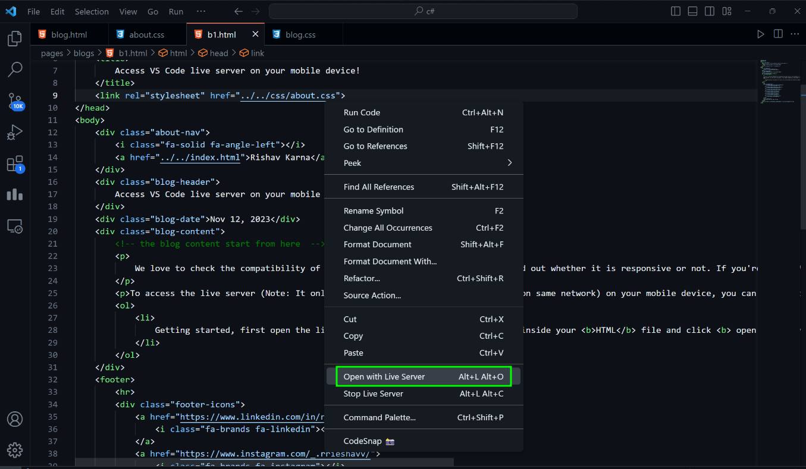
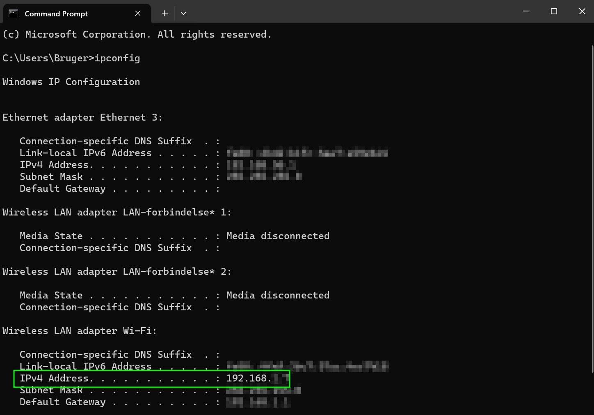

We love to check the compatibility of out website on our mobile device to find out whether it is responsive or not. If you're using VS Code, I'm sure you must love live server. It basically reloads the web browser on save (ctrl+s).
To access the live server (Note: It only works if your phone and computer are on same network) on your mobile device, you can follow the follow steps:
- Getting started, first open the live server in your VS Code. Right-click inside your HTML file and click open with Live Server . 
- Once the live server is running. Go to your terminal and find your IPv4 address. You can hit the command ipconfig and hit enter to find the IPv4 address. 
-
Now go to your phone browser and search for the following url:
your_IPv4_address:port
For example:
192.168.1.2:5501
And you will be redirected to your live server. Keep checking my blogs for more. Bye for now!